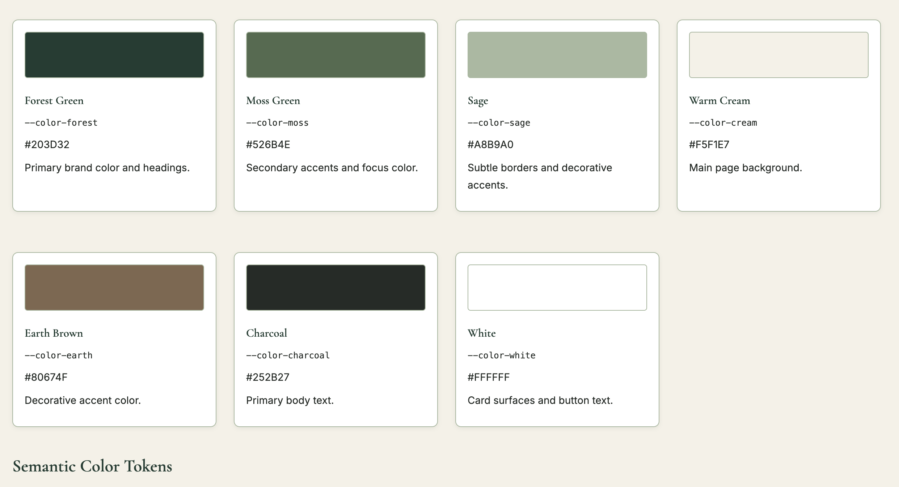
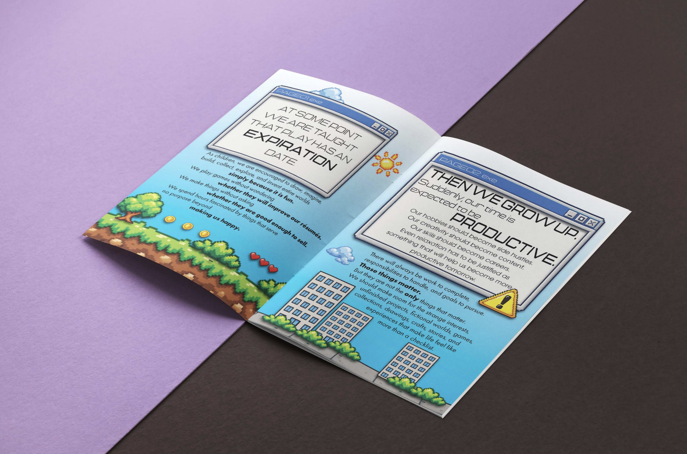

My Creative Portfolio
Welcome to my collection of creative work! Here you'll find projects showcasing my experience in web development, graphic design, editorial design, and motion graphics.
Managing Anxiety Website
 Web Development
Web Development
A responsive wellness website designed to help users manage anxiety through breathing exercises, calming sounds, activity ideas, and supportive notes.
Skills used: HTML, CSS, JavaScript, responsive design, accessibility
Vogel Timepiece
 Graphic Design / UI Design
Graphic Design / UI Design
A mock storefront website for a fictional watchmaker, focused on layout design, branding, and navigation structure.
Skills used: HTML, CSS, layout design
WaterME
 Web Development
Web Development
An interactive water-themed website featuring user engagement, responsive layouts, and front-end development techniques.
Skills used: HTML, CSS, JavaScript
Spicy Miso Photography

Web Development / BrandingA photography portfolio website designed to showcase visual storytelling, photography collections, and a cohesive creative identity.
Skills used: HTML, CSS, responsive web design
Play Is Not a Waste of Time

Editorial / Graphic DesignAn editorial manifesto booklet exploring the importance of play, creativity, and self-expression. The project focuses on typography, visual hierarchy, composition, and multi-page publication design.
Skills used: Adobe InDesign, typography, editorial layout
Pokémon Stinger
Motion GraphicsA Pokémon-themed animated stinger exploring motion, timing, and visual composition.
ATLUS Logo Animation
Motion GraphicsA motion graphics project centered around animated logo presentation and visual transitions.
Welcome to Philadelphia
Motion GraphicsA Philadelphia-themed motion graphics project exploring animated visual storytelling and creative composition.
Strawberry Matcha Advertisement
Motion Graphics / AdvertisingA creative beverage advertisement focused on motion design, product presentation, and visual storytelling.